1. Rendering Pipeline: Ray Generation and Triangle Intersection
Ray Generation
Ray generation involves creating rays that originate from the camera and pass through each pixel on the image plane. The process includes:
Camera Position and Orientation: Determine the position and orientation of the camera in the scene.
Viewing Frustum: Calculate the camera's viewing frustum, defined by the field of view (FOV), aspect ratio, and near and far clipping planes.
Pixel Sampling: For each pixel, calculate a direction vector from the camera position through the pixel, converting pixel coordinates to world coordinates.
Ray Construction: Construct a ray for each pixel with the direction vector and the camera's position. These rays intersect with the scene geometry to determine visible surfaces.
Triangle Intersection
The triangle intersection algorithm determines if and where a ray intersects a triangle in the scene, based on the Möller-Trumbore intersection algorithm:
Triangle Definition: Defined by its three vertices \(V_1, V_2, V_3\), calculate two edge vectors \(E_1 = V_2 - V_1\) and \(E_2 = V_3 - V_1\).
Determinant and Ray Direction: Calculate the determinant including the ray direction vector \(D\) and edge vectors \(E_1, E_2\) to find if the ray intersects the triangle's plane.
Barycentric Coordinates: Calculate the barycentric coordinates (\(u, v\)) to determine if the intersection point lies within the triangle.
Intersection Point: If \(0 \leq u \leq 1\), \(0 \leq v \leq 1\), and \(u + v \leq 1\), the ray intersects the triangle, determining the intersection point using \(t\).
Normal Calculation: Calculate the surface normal at the intersection point, which is constant for a flat triangle and calculated as the cross product of \(E_1\) and \(E_2\).
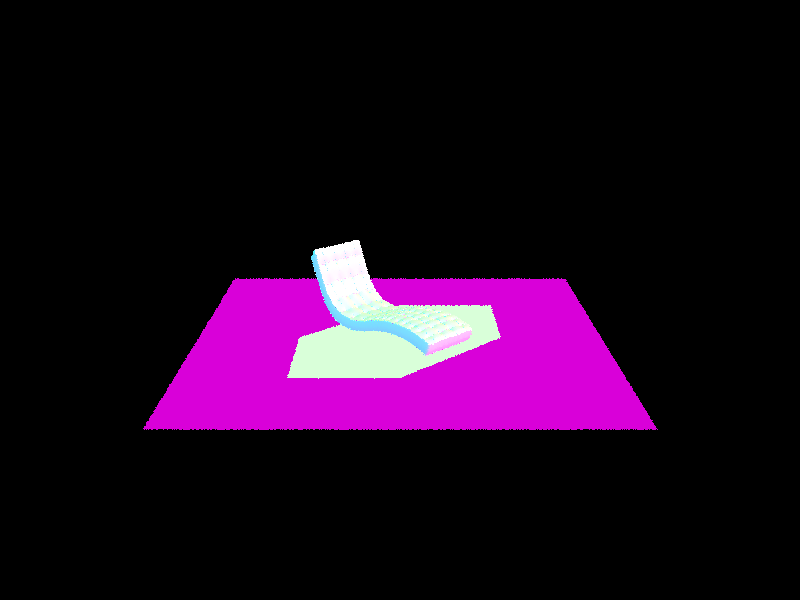
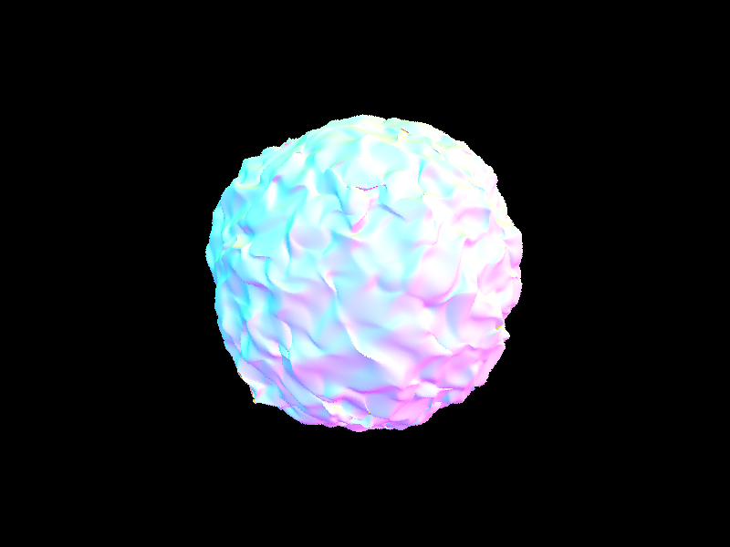
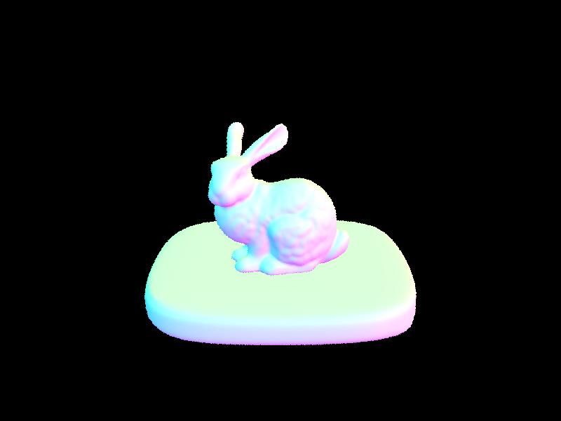
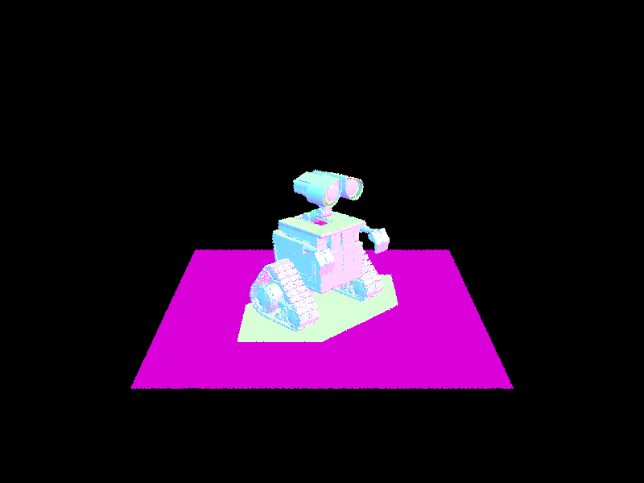
Screenshots of normal shading.
2. BVH Construction and Rendering with Normal Shading
BVH Construction Algorithm
Bounding Volume Hierarchy (BVH) is a tree structure on a set of geometric objects. All geometric objects are wrapped in bounding volumes that form the leaf nodes of the tree. These nodes are then grouped as small sets and enclosed within larger bounding volumes. These, in turn, are also grouped and enclosed within other larger bounding volumes in a recursive manner until the whole scene is enclosed in a single bounding volume, forming the root of the BVH.
Heuristic for Picking the Splitting Point
The heuristic chosen for picking the splitting point in the BVH construction algorithm is the Surface Area Heuristic (SAH). This heuristic minimizes the total cost of intersections by considering both the surface area of the bounding volumes and the number of primitives they contain. The SAH tries to find the split that minimizes the expression:
\(C_{trav}\): Cost of traversing a node (fixed cost).
\(P_{L}, P_{R}\): The number of primitives on the left and right side of the split.
\(A_{L}, A_{R}, A_{total}\): The surface areas of the bounding volumes on the left, right, and the total surface area of the node being split.
By evaluating this cost for possible splits at different positions and choosing the one with the lowest cost, the algorithm effectively balances the tree, reducing the overall number of intersection tests required during rendering.
Rendered Images with Normal Shading
Below are images rendered using BVH acceleration with normal shading, which significantly speeds up rendering times for complex scenes.


 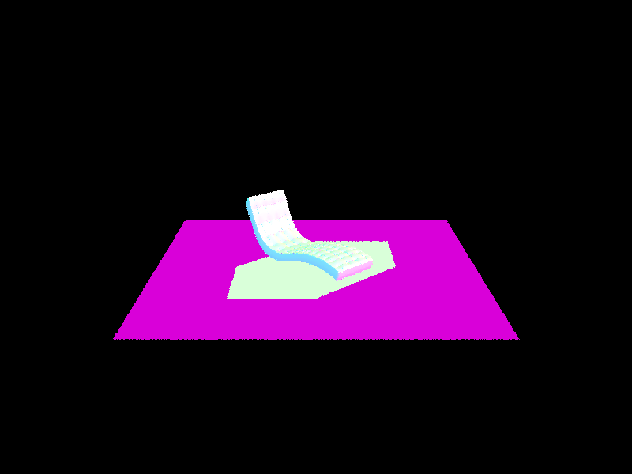
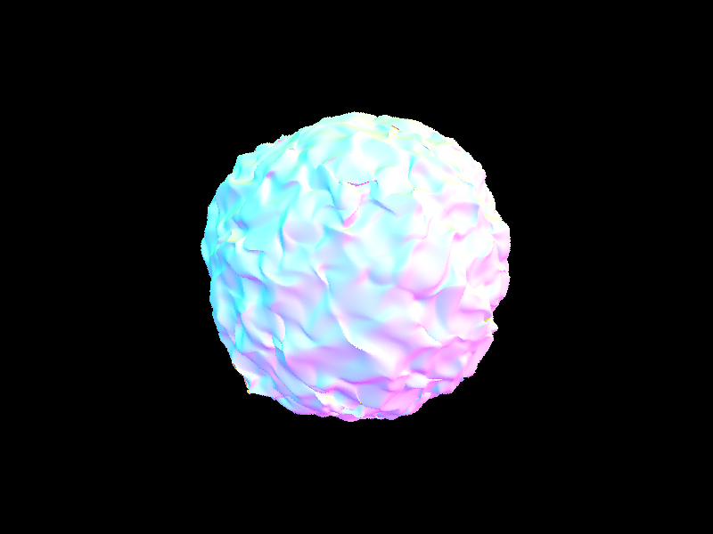
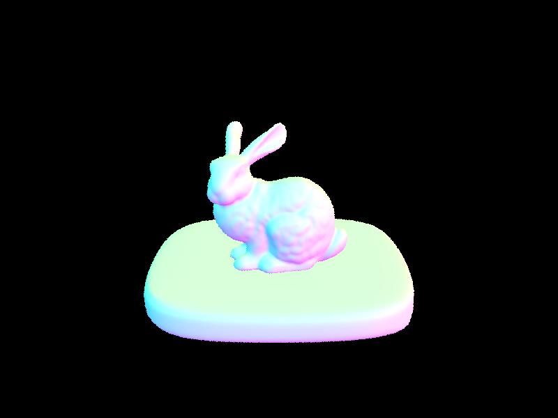
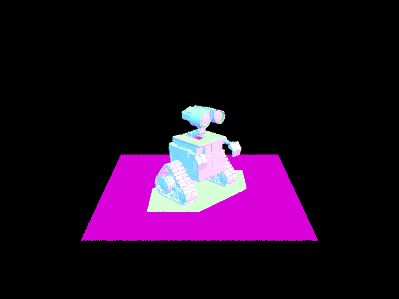
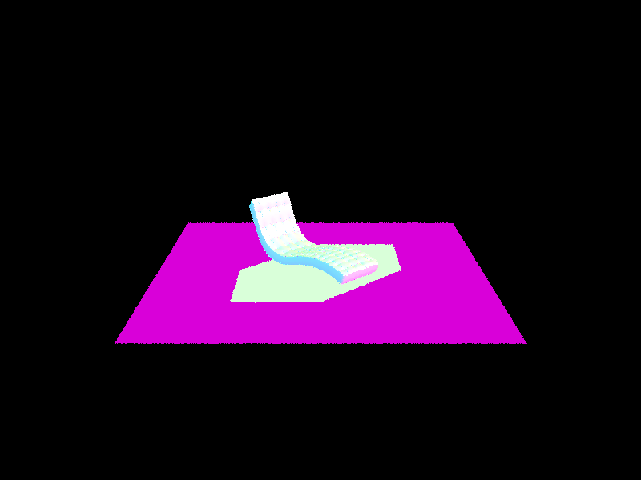
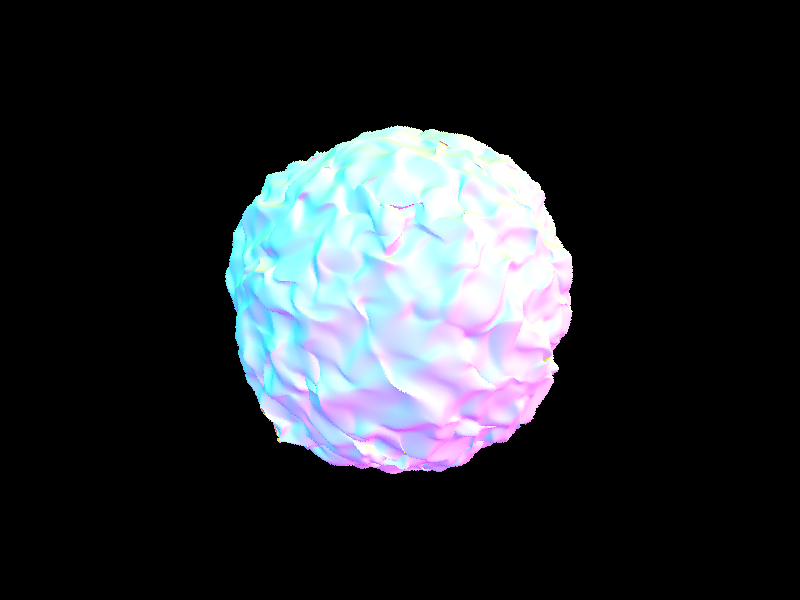
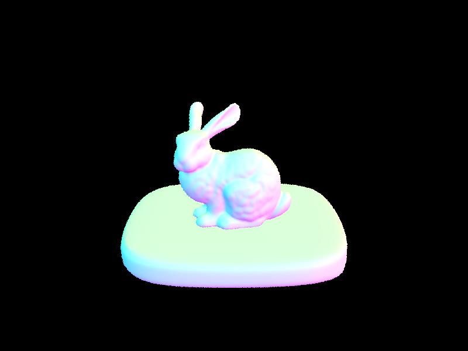
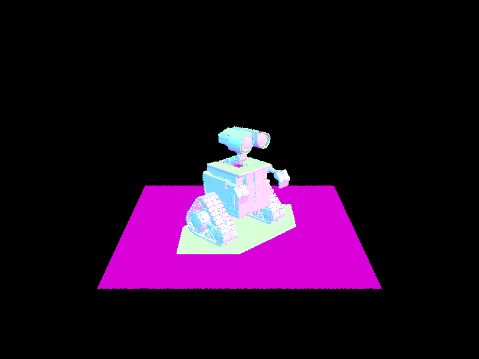